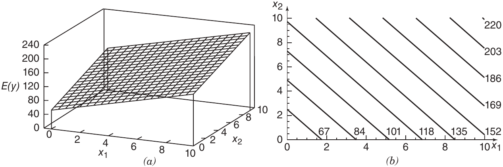
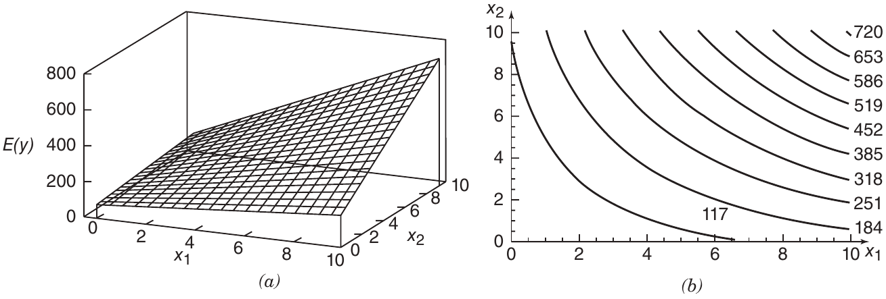
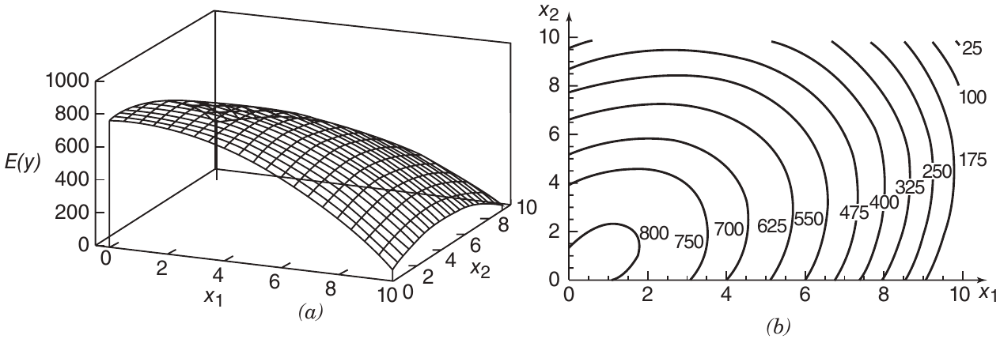

3. Regresión Lineal Múltiple#
Un modelo de regresión que incluye más de una variable explicativa se denomina modelo de regresión múltiple. El ajuste y análisis de estos modelos se desarrolla en este capítulo como una extensión de los resultados presentados en la Sección 2 sobre regresión lineal simple.
3.1. Modelos de Regresión Múltiple#
Supóngase que el rendimiento en libras de conversión de un proceso químico depende de la temperatura y de la concentración de un catalizador. Un modelo de regresión múltiple que podría describir esta relación es
(3.1)#\[y = \beta_0 + \beta_1 x_1 + \beta_2 x_2 + \varepsilon\]donde \(y\) representa el rendimiento, \(x_1\) la temperatura, y \(x_2\) la concentración del catalizador. Este es un modelo de regresión lineal múltiple con dos regresores. Se le denomina lineal, porque es lineal respecto a los parámetros \(\beta_0\), \(\beta_1\) y \(\beta_2\).
El modelo anterior describe un plano en el espacio tridimensional definido por \(y\), \(x_1\) y \(x_2\). Por ejemplo, la siguiente expresión representa un modelo con valores asignados
\[\mathbb{E}(y) = 50 + 10x_1 + 7x_2\]donde se asume que el valor esperado del término de error \(\varepsilon\) es cero. El parámetro \(\beta_0\) es la ordenada al origen del plano de regresión. Si el rango de datos incluye \(x_1 = x_2 = 0\), entonces \(\beta_0\) corresponde al valor medio de \(y\) en ese punto; de lo contrario, no tiene interpretación física directa.
\(\beta_1\) indica el cambio esperado en la respuesta \(y\) por unidad de cambio en \(x_1\), manteniendo constante \(x_2\).
\(\beta_2\) mide el cambio esperado en \(y\) por unidad de cambio en \(x_2\), manteniendo constante \(x_1\).

Figura 3.1 (a) El plano de regresión para el modelo (\(\mathbb{E}(y) = 50 + 10x_1 + 7x_2\)). (b) El gráfico de contorno.#
La Figura 3.1 muestra las curvas de nivel del modelo de regresión, es decir, líneas de respuesta esperada constante \(\mathbb{E}(y)\) en función de \(x_1\) y \(x_2\). Estas curvas son líneas rectas paralelas. En general, la variable respuesta \(y\) puede estar relacionada con \(k\) variables regresoras o predictoras. El modelo general se expresa como
Este modelo se denomina modelo de regresión lineal múltiple con \(k\) regresores. Los parámetros \(\beta_j\), \(j = 0, 1, \dots, k\), se denominan coeficientes de regresión. Este modelo define un hiperplano en el espacio \(k\)-dimensional de las variables regresoras \(x_j\).
Cada parámetro \(\beta_j\) representa el cambio esperado en \(y\) ante una variación unitaria en \(x_j\), manteniendo constantes las demás variables regresoras \(x_i\) (\(i \ne j\)). Por ello, se les denomina coeficientes de regresión parcial.
Los modelos de regresión lineal múltiple suelen emplearse como modelos empíricos o funciones de aproximación. Aunque se desconozca la relación funcional exacta entre \(y\) y las variables \(x_1, x_2, \dots, x_k\), en ciertos rangos de los regresores el modelo lineal resulta una buena aproximación.
Modelos con estructuras más complejas que la Ecuación (3.2) pueden aún analizarse mediante técnicas de regresión múltiple. Por ejemplo, el modelo polinomial cúbico
Si definimos \(x_1 = x\), \(x_2 = x^2\), y \(x_3 = x^3\), la ecuación anterior se reescribe como
(3.4)#\[y = \beta_0 + \beta_1 x_1 + \beta_2 x_2 + \beta_3 x_3 + \varepsilon\]que es un modelo de regresión múltiple con tres regresores. Los modelos polinomiales se tratan con más detalle en secciones posteriores.
También pueden analizarse mediante regresión múltiple los modelos que incluyen efectos de interacción. Por ejemplo, el modelo
(3.5)#\[y = \beta_0 + \beta_1 x_1 + \beta_2 x_2 + \beta_{12} x_1 x_2 + \varepsilon\]si se define \(x_3 = x_1 x_2\) y \(\beta_3 = \beta_{12}\), se transforma en
(3.6)#\[y = \beta_0 + \beta_1 x_1 + \beta_2 x_2 + \beta_3 x_3 + \varepsilon\]Aunque este modelo es lineal en los parámetros, la superficie generada no es necesariamente plana
La Figura 3.2(a) muestra la *superficie generada por el modelo: \(y = 50 + 10x_1 + 7x_2 + 5x_1 x_2\)+.
La Figura 3.2(b) representa su gráfico de contorno correspondiente.
La interacción significa que el efecto de una variable (por ejemplo, \(x_1\)) depende del nivel de la otra (\(x_2\)). En el ejemplo de la Figura 3.2, un cambio de \(x_1 = 2\) a \(x_1 = 8\) produce un cambio mucho menor en \(\mathbb{E}(y)\) cuando \(x_2 = 2\) que cuando \(x_2 = 10\).

Figura 3.2 (a) Gráfico tridimensional del modelo de regresión \(E(y) = 50 + 10x_1 + 7x_2 + 5x_1x_2.\) (b) Gráfico de contorno.#
Los efectos de interacción son comunes en estudios de sistemas reales y la regresión es una herramienta fundamental para su análisis. Como último ejemplo, se presenta el modelo cuadrático con interacción
Si se define \(x_3 = x_1^2\), \(x_4 = x_2^2\), \(x_5 = x_1 x_2\), \(\beta_3 = \beta_{11}\), \(\beta_4 = \beta_{22}\) y \(\beta_5 = \beta_{12}\), entonces el modelo puede expresarse como
Las Figuras 3.3a y 3.3b presentan la superficie generada por

Figura 3.3 (a) Gráfico del modelo de regresión \(E(y) = 800 + 10x_1 + 7x_2 - 8.5x_1^2 - 5x_2^2 + 4x_1x_2\), (b) Gráfico de contorno.#
Estos gráficos muestran que el cambio esperado en \(y\) ante una unidad de cambio en \(x_1\) depende tanto de \(x_1\) como de \(x_2\). Los términos cuadráticos y de interacción generan una forma abovedada en la función. Dependiendo de los coeficientes, el modelo puede adoptar formas variadas, siendo altamente flexible.
En la mayoría de aplicaciones reales, los parámetros \(\beta_i\) y la varianza del error \(\sigma^2\) no son conocidos y deben ser estimados a partir de datos muestrales. La ecuación ajustada de regresión se utiliza para predecir valores futuros de la respuesta \(y\) o para estimar la media de \(y\) en niveles específicos de los regresores.
3.2. Estimación de los Parámetros del Modelo#
3.2.1. Estimación por Mínimos Cuadrados de los Coeficientes de Regresión#
El método de mínimos cuadrados puede utilizarse para estimar los coeficientes de regresión en la ecuación (3.2). Supóngase que se cuenta con \(n > k\) observaciones, y que \(y_i\) representa la \(i\)-ésima respuesta observada, mientras que \(x_{ij}\) denota la \(i\)-ésima observación o nivel del regresor \(x_j\). Los datos pueden organizarse como se indica en la Tabla 3.1.
Se asume que el término de error \(\varepsilon\) cumple con las siguientes condiciones
\(\mathbb{E}(\varepsilon) = 0\)
\(\mathbb{Var}(\varepsilon) = \sigma^2\)
Los errores son no correlacionados entre sí
Observación (\(i\)) |
Respuesta (\(y_i\)) |
\(x_{i1}\) |
\(x_{i2}\) |
\(\dots\) |
\(x_{ik}\) |
|---|---|---|---|---|---|
1 |
\(y_1\) |
\(x_{11}\) |
\(x_{12}\) |
\(\dots\) |
\(x_{1k}\) |
2 |
\(y_2\) |
\(x_{21}\) |
\(x_{22}\) |
\(\dots\) |
\(x_{2k}\) |
\(\vdots\) |
\(\vdots\) |
\(\vdots\) |
\(\vdots\) |
\(\vdots\) |
|
\(n\) |
\(y_n\) |
\(x_{n1}\) |
\(x_{n2}\) |
\(\dots\) |
\(x_{nk}\) |
Supuestos y Formulación del Modelo de Regresión
A lo largo de esta sección, se asume que las variables regresoras \(x_1, x_2, \dots, x_k\) son variables fijas (es decir, determinísticas o no aleatorias), medidas sin error. No obstante, como se discutió en la Sección 2, todos los resultados obtenidos siguen siendo válidos cuando los regresores son variables aleatorias. Esto resulta relevante, ya que en estudios observacionales muchas de las variables explicativas suelen ser aleatorias. En cambio, cuando los datos provienen de un experimento diseñado, es más probable que las \(x\) sean variables fijas.
Cuando las variables \(x\) son aleatorias, basta con que las observaciones de cada regresor sean independientes y que su distribución no dependa de los coeficientes de regresión (los \(\beta\)) ni de \(\sigma^2\). Al realizar pruebas de hipótesis o construir intervalos de confianza, se requerirá asumir que la distribución condicional de \(y\) dado \(x_1, x_2, \dots, x_k\) es normal, con media \(\beta_0 + \beta_1 x_1 + \beta_2 x_2 + \dots + \beta_k x_k\) y varianza \(\sigma^2\).
Podemos escribir el modelo de regresión muestral correspondiente a la Ecuación (3.2) como
(3.9)#\[ y_i = \beta_0 + \beta_1 x_{i1} + \beta_2 x_{i2} + \dots + \beta_k x_{ik} + \varepsilon_i \]o, en forma sumatoria:
(3.10)#\[ y_i = \beta_0 + \sum_{j=1}^k \beta_j x_{ij} + \varepsilon_i,\quad i = 1, 2, \dots, n \]
La función de mínimos cuadrados a minimizar con respecto a los parámetros \(\beta_0, \beta_1, \dots, \beta_k\) es
Los estimadores por mínimos cuadrados deben satisfacer el sistema de ecuaciones obtenido al anular las derivadas parciales. Para \(\beta_0\)
(3.12)#\[ \left.\frac{\partial S}{\partial \beta_0}\right|_{\hat{\beta}_{0},\hat{\beta}_{1},\dots,\hat{\beta}_{k}} = -2 \sum_{i=1}^n \left( y_i - \hat{\beta}_0 - \sum_{j=1}^k \hat{\beta}_j x_{ij} \right) = 0 \]Para cada \(\beta_j\):
(3.13)#\[ \left.\frac{\partial S}{\partial \beta_j}\right|_{\hat{\beta}_{0},\hat{\beta}_{1},\dots,\hat{\beta}_{k}} = -2 \sum_{i=1}^n \left( y_i - \hat{\beta}_0 - \sum_{j=1}^k \hat{\beta}_j x_{ij} \right) x_{ij} = 0,\quad j = 1, 2, \dots, k \]
Simplificando el sistema anterior se obtiene el conjunto de ecuaciones normales. Para la constante
\[ n \hat{\beta}_0 + \hat{\beta}_1 \sum_{i=1}^n x_{i1} + \hat{\beta}_2 \sum_{i=1}^n x_{i2} + \dots + \hat{\beta}_k \sum_{i=1}^n x_{ik} = \sum_{i=1}^n y_i \]Para cada regresor \(x_j\):
(3.14)#\[ \hat{\beta}_0 \sum_{i=1}^n x_{ij} + \hat{\beta}_1 \sum_{i=1}^n x_{i1} x_{ij} + \hat{\beta}_2 \sum_{i=1}^n x_{i2} x_{ij} + \dots + \hat{\beta}_k \sum_{i=1}^n x_{ik} x_{ij} = \sum_{i=1}^n x_{ij} y_i,\quad j = 1, 2, \dots, k \]
Obsérvese que existen \(p = k + 1\) ecuaciones normales, una por cada coeficiente de regresión desconocido. La solución de este sistema corresponde a los estimadores de mínimos cuadrados \(\hat{\beta}_0, \hat{\beta}_1, \dots, \hat{\beta}_k\).
Es más conveniente analizar los modelos de regresión múltiple utilizando notación matricial, ya que permite representar de manera compacta tanto el modelo como los datos y los resultados. En notación matricial, el modelo dado por la ecuación (3.9) se expresa como
(3.15)#\[ \mathbf{y} = \mathbf{X} \boldsymbol{\beta} + \boldsymbol{\varepsilon} \]donde
\[\begin{split} \mathbf{y} = \begin{bmatrix} y_1 \\ y_2 \\ \vdots \\ y_n \end{bmatrix},\quad \mathbf{X} = \begin{bmatrix} 1 & x_{11} & x_{12} & \cdots & x_{1k} \\ 1 & x_{21} & x_{22} & \cdots & x_{2k} \\ \vdots & \vdots & \vdots & \ddots & \vdots \\ 1 & x_{n1} & x_{n2} & \cdots & x_{nk} \end{bmatrix} \end{split}\]\[\begin{split} \boldsymbol{\beta} = \begin{bmatrix} \beta_0 \\ \beta_1 \\ \vdots \\ \beta_k \end{bmatrix},\quad \boldsymbol{\varepsilon} = \begin{bmatrix} \varepsilon_1 \\ \varepsilon_2 \\ \vdots \\ \varepsilon_n \end{bmatrix} \end{split}\]En general:
\(\mathbf{y}\) es un vector \(n \times 1\) de respuestas observadas,
\(\mathbf{X}\) es una matriz \(n \times p\) (con \(p = k+1\)) de niveles de los regresores,
\(\boldsymbol{\beta}\) es un vector \(p \times 1\) de coeficientes de regresión,
\(\boldsymbol{\varepsilon}\) es un vector \(n \times 1\) de errores aleatorios.
Queremos encontrar el vector de estimadores de mínimos cuadrados, denotado \(\hat{\boldsymbol{\beta}}\), que minimiza la función
Expandimos esta expresión
(3.17)#\[ S(\boldsymbol{\beta}) = \mathbf{y}' \mathbf{y} - \boldsymbol{\beta}' \mathbf{X}' \mathbf{y} - \mathbf{y}' \mathbf{X} \boldsymbol{\beta} + \boldsymbol{\beta}' \mathbf{X}' \mathbf{X} \boldsymbol{\beta} = \mathbf{y}' \mathbf{y} - 2 \boldsymbol{\beta}' \mathbf{X}' \mathbf{y} + \boldsymbol{\beta}' \mathbf{X}' \mathbf{X} \boldsymbol{\beta} \]ya que \(\boldsymbol{\beta}' \mathbf{X}' \mathbf{y}\) es un escalar y su transpuesta coincide: \((\boldsymbol{\beta}' \mathbf{X}' \mathbf{y})' = \mathbf{y}' \mathbf{X} \boldsymbol{\beta}\).
Sean \(\boldsymbol{x}=\boldsymbol{\beta}\) y \(A=\mathbf{X}' \mathbf{X}\), calculemos la derivada de la forma cuadratica \(\boldsymbol{x}'A\boldsymbol{x}\)
Derivando con respecto a \(x_{k}\) para obtener la \(k\)-ésima componente del gradiente \(\nabla_{\boldsymbol{x}}(\boldsymbol{x}'A\boldsymbol{x})\)
Por lo tanto, para \(k=1,2,\dots,p\), bajo el supuesto de simetría para \(A\) se tiene que
Nótese que \(A:=\mathbf{X}'\mathbf{X}\), es simétrica, en efecto: \(A'=(\mathbf{X}'\mathbf{X})'=\mathbf{X}'(\mathbf{X}')'=\mathbf{X}'\mathbf{X}=A\), entonces \(\partial_{\boldsymbol{\beta}}(\boldsymbol{\beta}'\mathbf{X}'\mathbf{X}\boldsymbol{\beta})=2\mathbf{X}'\mathbf{X}\boldsymbol{\beta}\).
Por lo tanto, el mínimo de \(S(\boldsymbol{\beta})\) se obtiene al anular su derivada con respecto a \(\boldsymbol{\beta}\)
(3.19)#\[ \frac{\partial S}{\partial \boldsymbol{\beta}} = -2 \mathbf{X}' \mathbf{y} + 2 \mathbf{X}' \mathbf{X} \hat{\boldsymbol{\beta}} = 0 \]lo cual se simplifica a
(3.20)#\[ \mathbf{X}' \mathbf{X} \hat{\boldsymbol{\beta}} = \mathbf{X}' \mathbf{y} \]La Ecuación (3.20) representa el sistema matricial de ecuaciones normales de mínimos cuadrados, análogo matricial de la presentación escalar en la Ecuación (3.14).
Para resolver el sistema de Ecuaciones normales (3.20), multiplicamos ambos lados por la inversa de \(\mathbf{X}' \mathbf{X}\). Así, el estimador de mínimos cuadrados de \(\boldsymbol{\beta}\) se expresa como
(3.21)#\[ \hat{\boldsymbol{\beta}} = (\mathbf{X}' \mathbf{X})^{-1} \mathbf{X}' \mathbf{y} \]siempre que exista la matriz inversa \((\mathbf{X}' \mathbf{X})^{-1}\). Esta condición se cumple si las columnas de \(\mathbf{X}\) son linealmente independientes, es decir, si ninguna columna puede escribirse como combinación lineal de las demás.
Es fácil verificar que la forma matricial de las ecuaciones normales coincide con la forma escalar dada en la Ecuación (3.14). Si desarrollamos la Ecuación (3.20), obtenemos el sistema
Aquí se observa que \(\mathbf{X}'\mathbf{X}\) es una matriz simétrica de tamaño \(p \times p\), donde los elementos diagonales son sumas de cuadrados de las columnas de \(\mathbf{X}\), mientras que los elementos fuera de la diagonal son productos cruzados. Por su parte, \(\mathbf{X}' \mathbf{y}\) es un vector \(p \times 1\) que contiene las sumas de productos cruzados entre las columnas de \(\mathbf{X}\) y las observaciones \(y_i\).
El modelo ajustado para un vector de niveles de regresores \(\mathbf{x}' = [1, x_1, x_2, \dots, x_k]\) es
El vector de valores ajustados \(\hat{\mathbf{y}}\) correspondientes a las observaciones \(\mathbf{y}\) se expresa como:
(3.24)#\[ \hat{\mathbf{y}} = \mathbf{X} \hat{\boldsymbol{\beta}} = \mathbf{X} (\mathbf{X}' \mathbf{X})^{-1} \mathbf{X}' \mathbf{y} = \mathbf{H} \mathbf{y} \]donde la matriz \(\mathbf{H} = \mathbf{X}(\mathbf{X}' \mathbf{X})^{-1} \mathbf{X}'\) se denomina matriz sombrero (hat matrix) porque «pone el sombrero» a \(\mathbf{y}\rightarrow\) produce \(\hat{\mathbf{y}}\) :). Esta matriz proyecta el vector de valores observados \(\mathbf{y}\) en un vector de valores ajustados, \(\hat{\mathbf{y}}\) y desempeña un papel fundamental en el análisis de regresión.
La diferencia entre el valor observado \(y_i\) y el correspondiente valor ajustado \(\hat{y}_i\) es el residuo:
El vector completo de residuos puede expresarse en notación matricial como
Otra forma útil de expresar el vector de residuos \(\mathbf{e}\) es
Esta expresión muestra que los residuos son una proyección ortogonal del vector de observaciones \(\mathbf{y}\) sobre el complemento ortogonal del espacio columna de \(\mathbf{X}\), ya que \(\mathbf{I} - \mathbf{H}\) es una matriz simétrica e idempotente que representa dicha proyección.
3.2.2. Ejemplo: Datos de Tiempo de Entrega#
Una embotelladora de bebidas gaseosas está analizando las rutas de servicio a máquinas expendedoras en su sistema de distribución. El objetivo es predecir el tiempo requerido por el conductor de ruta para atender las máquinas en un punto de venta. Esta actividad incluye el reabastecimiento de productos y labores menores de mantenimiento o limpieza.
El ingeniero industrial a cargo del estudio ha sugerido que las dos variables más importantes que afectan el tiempo de entrega (\(y\)) son el número de cajas de producto abastecidas (\(x_1\)) y la distancia recorrida por el conductor (\(x_2\)). Se recolectaron 25 observaciones, presentadas en la Tabla 3.2.
Se ajustará el siguiente modelo de regresión lineal múltiple:
3.2.3. Tabla 3.2: Datos de tiempos de entrega del Ejemplo 3.1#
Observación |
\(y\) (min) |
\(x_1\) (cajas) |
\(x_2\) (pies) |
|---|---|---|---|
1 |
16.68 |
7 |
560 |
2 |
11.50 |
3 |
220 |
3 |
12.03 |
3 |
340 |
4 |
14.88 |
4 |
80 |
5 |
13.75 |
6 |
150 |
6 |
18.11 |
7 |
330 |
7 |
8.00 |
2 |
110 |
8 |
17.83 |
7 |
210 |
9 |
79.24 |
30 |
1460 |
10 |
21.50 |
5 |
605 |
11 |
40.33 |
16 |
688 |
12 |
21.00 |
10 |
215 |
13 |
13.50 |
4 |
255 |
14 |
19.75 |
6 |
462 |
15 |
24.00 |
9 |
448 |
16 |
29.00 |
10 |
776 |
17 |
15.35 |
6 |
200 |
18 |
19.00 |
7 |
132 |
19 |
9.50 |
3 |
36 |
20 |
35.10 |
17 |
770 |
21 |
17.90 |
10 |
140 |
22 |
52.32 |
26 |
810 |
23 |
18.75 |
9 |
450 |
24 |
19.83 |
8 |
635 |
25 |
10.75 |
4 |
150 |
3.2.4. Visualización y Construcción del Modelo#
Las representaciones gráficas resultan muy útiles al ajustar modelos de regresión múltiple. La Figura 3.4 muestra una matriz de diagramas de dispersión para los datos de tiempo de entrega. Esta matriz es un arreglo bidimensional de gráficos bidimensionales, donde cada recuadro (exceptuando la diagonal) contiene un diagrama de dispersión entre un par de variables.
Este tipo de visualización permite identificar relaciones lineales o no lineales entre las variables, así como observar la dispersión de los datos. En muchos casos, esto proporciona más información que un resumen numérico, como la matriz de correlación.
Cuando hay solo dos regresores, también puede ser útil un diagrama tridimensional de dispersión que relacione la respuesta con las variables explicativas. La Figura 3.5 muestra dicha visualización para los datos de tiempo de entrega. Algunos paquetes estadísticos permiten rotar estas gráficas, ofreciendo múltiples vistas de la nube de puntos, lo cual ayuda a evaluar visualmente si un modelo de regresión lineal es razonable.
3.2.5. Construcción de la Matriz \(X\) y el Vector \(y\)#
Para ajustar el modelo de regresión múltiple, primero se forma la matriz \(X\) y el vector de respuestas \(y\):
La matriz \(X^\top X\) es:
y el vector \(X^\top y\) es:
3.2.6. Estimación de los Coeficientes por Mínimos Cuadrados#
El estimador por mínimos cuadrados está dado por:
Con la matriz inversa \((X^\top X)^{-1}\) aproximada a cinco decimales:
Multiplicando, se obtiene:
3.2.7. Modelo Ajustado#
El modelo ajustado por mínimos cuadrados es:
$\( \hat{y} = 2.34123 + 1.61591x_1 + 0.01438x_2 \)$(delivery_model)m
3.2.8. Valores Ajustados y Residuos#
La Tabla 3.3 presenta los valores observados \(y_i\), los valores ajustados \(\hat{y}_i\) y los residuos \(e_i = y_i - \hat{y}_i\) correspondientes a este modelo.
3.2.9. Salida Computacional#
La Tabla 3.4 presenta una porción de la salida de Python para los datos del tiempo de entrega. Aunque el formato varía según el software, este tipo de salida incluye los elementos estándar en un análisis de regresión múltiple. En las siguientes secciones se explicará cada parte de esta salida.
3.2.10. Interpretación Geométrica de los Mínimos Cuadrados#
Una interpretación geométrica intuitiva del método de mínimos cuadrados puede ser de utilidad. Podemos considerar al vector de observaciones \(y^\top = [y_1, y_2, \dots, y_n]\) como un vector que va desde el origen hasta un punto \(A\) en un espacio muestral de dimensión \(n\). En la Figura 3.6 se ilustra este caso para \(n=3\).
La matriz \(X\) está compuesta por \(p\) vectores columna de dimensión \(n \times 1\), como el vector de unos, \(\mathbf{1}\), y los regresores \(x_1, x_2, \dots, x_k\). Cada columna define un vector desde el origen. Estos \(p\) vectores generan un subespacio de dimensión \(p\), llamado espacio de estimación.
Para \(p = 2\), este subespacio se muestra en la Figura 3.6. Cualquier punto en este subespacio se puede representar como una combinación lineal de los vectores columna de \(X\), es decir, como \(X \boldsymbol{\beta}\). Sea el punto \(B\) definido por este vector.
La distancia cuadrada entre \(B\) y \(A\) es:
Minimizar esta distancia equivale a encontrar el punto en el espacio de estimación más cercano a \(A\), es decir, el pie de la perpendicular desde \(A\) al subespacio. Este punto es \(C\), y está dado por:
Como \(\mathbf{y} - \hat{\mathbf{y}} = \mathbf{y} - X \hat{\mathbf{b}}\) es perpendicular al espacio de estimación, se cumple:
lo cual lleva directamente a las ecuaciones normales del método de mínimos cuadrados:
3.2.11. Propiedades de los Estimadores por Mínimos Cuadrados#
Las propiedades estadísticas del estimador de mínimos cuadrados \(\hat{\mathbf{b}}\) pueden demostrarse fácilmente. Consideremos primero el sesgo, bajo el supuesto de que el modelo es correcto:
Dado que \(\mathbb{E}(\boldsymbol{\varepsilon}) = \mathbf{0}\) y \((X^\top X)^{-1} X^\top X = I\), se concluye que \(\hat{\mathbf{b}}\) es un estimador insesgado de \(\boldsymbol{\beta}\) si el modelo es válido.
La propiedad de varianza de \(\hat{\mathbf{b}}\) se expresa mediante la matriz de covarianzas:
Esta es una matriz simétrica de dimensión \(p \times p\), cuya diagonal contiene las varianzas de los coeficientes \(\hat{\beta}_j\), y cuyos elementos fuera de la diagonal representan las covarianzas entre \(\hat{\beta}_i\) y \(\hat{\beta}_j\).
Aplicando el operador varianza a \(\hat{\mathbf{b}}\), se obtiene:
Dado que \((X^\top X)^{-1} X^\top\) es una matriz constante, y suponiendo que \(\mathbb{Var}(\mathbf{y}) = \sigma^2 I\), se concluye:
Por tanto, si denotamos \(C = (X^\top X)^{-1}\), entonces:
La varianza de \(\hat{\beta}_j\) es \(\sigma^2 C_{jj}\),
La covarianza entre \(\hat{\beta}_i\) y \(\hat{\beta}_j\) es \(\sigma^2 C_{ij}\).
El Apéndice C.4 demuestra que el estimador de mínimos cuadrados \(\hat{\mathbf{b}}\) es el mejor estimador lineal insesgado de \(\boldsymbol{\beta}\), de acuerdo con el teorema de Gauss-Markov.
Además, si se asume que los errores \(\varepsilon_i\) están distribuidos normalmente, entonces —como se verá en la Sección 3.2.6— \(\hat{\mathbf{b}}\) también es el estimador de máxima verosimilitud de \(\boldsymbol{\beta}\). En este caso, \(\hat{\mathbf{b}}\) es también el estimador insesgado de varianza mínima para \(\boldsymbol{\beta}\).
3.2.12. Estimación de \(\sigma^2\)#
Al igual que en el caso de regresión lineal simple, puede construirse un estimador para la varianza del error \(\sigma^2\) a partir de la suma de cuadrados de los residuos:
Sustituyendo \(\mathbf{e} = \mathbf{y} - X\hat{\mathbf{b}}\), se obtiene:
Agrupando términos y usando la simetría escalar:
Dado que \(X^\top X \hat{\mathbf{b}} = X^\top \mathbf{y}\), la expresión se simplifica a:
El Apéndice C.3 demuestra que la suma de cuadrados de los residuos posee \(n - p\) grados de libertad, dado que se han estimado \(p\) parámetros en el modelo de regresión. Por tanto, el cuadrado medio de los residuos se define como:
Además, el valor esperado de \(\text{MS}_{\text{Res}}\) es \(\sigma^2\), por lo cual un estimador insesgado de \(\sigma^2\) está dado por:
Este estimador, como se indicó también en el caso de regresión simple, depende del modelo asumido.
3.2.12.1. Ejemplo: Estimación de \(\sigma^2\) en el modelo de tiempo de entrega#
Procedemos ahora a estimar la varianza del error \(\sigma^2\) para el modelo de regresión múltiple ajustado a los datos de tiempo de entrega descritos en el Ejemplo 3.1.
Primero, se tiene:
y
Entonces, la suma de cuadrados de los residuos es:
Dado que \(n = 25\) y \(p = 3\), se obtiene:
El valor reportado por el software Python en la Tabla 3.4 es de aproximadamente 10.6, consistente con este resultado.
Como se explicó en la regresión simple, la estimación de \(\sigma^2\) depende del modelo especificado. Por ejemplo, si en lugar de ajustar un modelo con dos regresores se considera solo uno (como \(x_1\), número de cajas), el valor obtenido para \(\hat{\sigma}^2\) es mayor (17.5), indicando peor ajuste. Ambos valores son técnicamente correctos, pero están condicionados por la especificación del modelo.
3.2.13. Inadecuación de los Diagramas de Dispersión en Regresión Múltiple#
En el Capítulo 2 se mostró que el diagrama de dispersión es una herramienta fundamental para analizar la relación entre \(y\) y \(x\) en la regresión lineal simple. También se observó en el Ejemplo 3.1 que una matriz de diagramas de dispersión resulta útil para visualizar la relación entre \(y\) y dos regresores.
Podría parecer razonable concluir que esta utilidad se extiende al caso general; es decir, que examinar los diagramas de dispersión de \(y\) contra cada regresor \(x_1, x_2, \dots, x_k\) siempre aporta información relevante sobre la relación entre la variable respuesta y los predictores. Desafortunadamente, esto no es cierto en general.
Siguiendo la exposición de Daniel y Wood (1980), se ilustra esta limitación en un problema con dos variables regresoras. Consideremos los datos generados a partir del modelo:
La matriz de diagramas de dispersión correspondiente a este conjunto de datos se muestra en la Figura 3.7. El gráfico de \(y\) contra \(x_1\) no sugiere ninguna relación aparente entre ambas variables, mientras que el gráfico de \(y\) contra \(x_2\) indica una relación lineal con una pendiente cercana a 8. Ambos gráficos son engañosos.
En estos datos, existen dos pares de observaciones que comparten los mismos valores de \(x_2\) (específicamente \(x_2 = 2\) y \(x_2 = 4\)). Esto permite estimar el efecto de \(x_1\) manteniendo fijo \(x_2\). Por ejemplo:
Para \(x_2 = 2\):
Para \(x_2 = 4\):
Estos resultados son correctos. Conociendo ya \(\hat{\beta}_1\), podría estimarse el efecto de \(x_2\). Sin embargo, este procedimiento no es aplicable en general, ya que la mayoría de los conjuntos de datos no contienen puntos duplicados.
Este ejemplo ilustra que los diagramas de dispersión de \(y\) contra cada \(x_j\) (para \(j = 1, 2, \dots, k\)) pueden inducir a conclusiones erróneas, incluso en un escenario ideal sin error y con un modelo aditivo perfecto. En un contexto realista, con múltiples regresores y presencia de ruido, la interpretación puede volverse aún más confusa.
Cuando existe un único regresor dominante, o los predictores operan de forma casi independiente, la matriz de diagramas de dispersión puede seguir siendo útil. No obstante, si varios regresores importantes están correlacionados entre sí, entonces esta herramienta visual puede ser profundamente engañosa.
Los métodos analíticos para disentramar las relaciones entre múltiples variables regresoras y la variable respuesta se desarrollan en el Capítulo 10.
3.2.14. Estimación por Máxima Verosimilitud#
Al igual que en el caso de la regresión lineal simple, puede demostrarse que los estimadores de máxima verosimilitud de los parámetros del modelo en regresión lineal múltiple —cuando los errores del modelo se distribuyen de forma normal e independiente— coinciden con los estimadores por mínimos cuadrados.
El modelo es:
y los errores \(\varepsilon\) se suponen normalmente distribuidos, independientes entre sí, con varianza constante \(\sigma^2\); es decir, \(\varepsilon \sim \mathcal{N}(0, \sigma^2 I)\). La función de densidad normal de cada error \(\varepsilon_i\) es:
La función de verosimilitud es la densidad conjunta de \(\varepsilon_1, \varepsilon_2, \dots, \varepsilon_n\), es decir, el producto de sus densidades marginales:
Como \(\varepsilon = y - X\beta\), la función de verosimilitud puede reescribirse como:
Al igual que en la regresión simple, resulta más cómodo trabajar con el logaritmo de la verosimilitud:
Para un valor fijo de \(\sigma\), se observa que el logaritmo de la verosimilitud se maximiza cuando el término cuadrático
es mínimo. Por tanto, el estimador de máxima verosimilitud de \(\beta\) bajo normalidad es el estimador por mínimos cuadrados:
El estimador de máxima verosimilitud de \(\sigma^2\) es:
Estas expresiones representan la generalización a regresión múltiple de los resultados obtenidos en la Sección 2.11 para el caso simple. Las propiedades estadísticas de los estimadores de máxima verosimilitud también fueron discutidas allí.
3.2.15. Prueba de significancia de la regresión#
Una vez estimados los parámetros del modelo de regresión, surgen dos preguntas fundamentales:
¿Qué tan adecuado es el modelo en su conjunto?
¿Qué variables regresoras específicas son importantes?
Para abordar estas cuestiones, se utilizan procedimientos de prueba de hipótesis que suponen que los errores \(\varepsilon_i\) son independientes, con media cero \(\mathbb{E}(\varepsilon_i) = 0\) y varianza constante \(Var(\varepsilon_i) = \sigma^2\), y que siguen una distribución normal.
La prueba de significancia de la regresión busca determinar si existe alguna relación lineal entre la variable de respuesta \(y\) y al menos una de las variables regresoras \(x_1, x_2, \dots, x_k\). Se trata de una prueba global de adecuación del modelo.
Las hipótesis que se evalúan son:
Rechazar la hipótesis nula \(H_0\) indica que al menos una de las variables regresoras contribuye significativamente al modelo.
La prueba se basa en una generalización del análisis de varianza (ANOVA). La suma total de cuadrados se descompone en dos componentes:
Donde:
\(SST\): Suma total de cuadrados
\(SSR\): Suma de cuadrados por regresión
\(SS_{Res}\): Suma de cuadrados de los residuos
De acuerdo con el Apéndice C.3, si \(H_0\) es verdadera:
\(\dfrac{SSR}{\sigma^2} \sim \chi^2_k\)
\(\dfrac{SS_{Res}}{\sigma^2} \sim \chi^2_{n-k-1}\)
\(SSR\) y \(SS_{Res}\) son independientes
Por lo tanto, el estadístico de prueba es:
y sigue una distribución \(F_{k, n-k-1}\) bajo \(H_0\).
El valor esperado del cuadrado medio residual es:
y el valor esperado del cuadrado medio de regresión es:
donde:
\(\beta^* = (\beta_1, \beta_2, \dots, \beta_k)^\top\)
\(X_c\) es la matriz centrada de regresores, es decir:
Así, si el valor observado de \(F_0\) es grande, es probable que al menos un \(\beta_j \ne 0\).
Bajo la alternativa \(H_1\), \(F_0\) sigue una distribución \(F\) no central con \(k\) y \(n-k-1\) grados de libertad y parámetro de no centralidad:
Por lo tanto, para evaluar la hipótesis:
se calcula \(F_0\) y se rechaza \(H_0\) si:
Este procedimiento se resume normalmente en una tabla ANOVA como la siguiente:
Tabla: Análisis de varianza para significancia de la regresión en regresión múltiple
Fuente de variación |
Suma de cuadrados |
Grados de libertad |
Cuadrado medio |
|---|---|---|---|
Regresión |
\(SSR\) |
\(k\) |
\(MSR = \dfrac{SSR}{k}\) |
Residuos |
\(SS_{Res}\) |
\(n - k - 1\) |
\(MS_{Res} = \dfrac{SS_{Res}}{n-k-1}\) |
Total |
\(SST\) |
\(n - 1\) |
Una fórmula computacional útil para \(SS_{Res}\) es:
Usando:
entonces se obtiene:
y la relación:
3.2.16. Ejemplo: Los datos del tiempo de entrega#
Procedemos a realizar la prueba de significancia de la regresión utilizando los datos del tiempo de entrega presentados en el Ejemplo 3.1. Algunos de los valores necesarios se calcularon previamente en el Ejemplo 3.2. Notamos que:
El análisis de varianza se presenta en la Tabla 3.6. Para contrastar la hipótesis nula:
calculamos la estadística de prueba:
Dado que el valor p asociado a esta estadística es muy pequeño, se concluye que el tiempo de entrega está relacionado significativamente con el volumen entregado y/o la distancia recorrida. No obstante, este resultado no garantiza que la relación encontrada sea apropiada para predecir el tiempo de entrega como función del volumen y la distancia. Para ello, se requerirán pruebas adicionales de adecuación del modelo.
3.2.17. Tabla 3.6: Análisis de varianza para la prueba de significancia de la regresión#
Fuente de variación |
Suma de cuadrados |
Grados de libertad |
Cuadrado medio |
Estadístico F |
|---|---|---|---|---|
Regresión |
\(SSR = 5550.8166\) |
\(k = 2\) |
\(MSR = 2775.4083\) |
\(F_0 = 261.24\) |
Residuos |
\(SS_{Res} = 233.7260\) |
\(n - k - 1 = 22\) |
\(MS_{Res} = 10.6239\) |
|
Total |
\(SST = 5784.5426\) |
\(n - 1 = 24\) |
3.2.18. \(R^2\) y \(R^2_{\text{ajustado}}\)#
Dos medidas adicionales para evaluar la adecuación global del modelo son el coeficiente de determinación \(R^2\) y su versión ajustada, denotada como \(R^2_{\text{ajustado}}\).
El resultado generado por Python en la Tabla 3.4 reporta que el valor de \(R^2\) para el modelo de regresión múltiple aplicado a los datos de tiempo de entrega es:
En el Ejemplo 2.9, donde se utilizó un único regresor \(x_1\) (número de casos), el valor de \(R^2\) fue más bajo:
En general, el coeficiente \(R^2\) nunca disminuye cuando se añade una nueva variable explicativa al modelo, sin importar si dicha variable aporta significativamente o no. Por esta razón, puede resultar difícil interpretar si un aumento en \(R^2\) realmente refleja una mejora sustancial del modelo.
Por este motivo, muchos constructores de modelos prefieren usar el coeficiente de determinación ajustado, definido como:
Este estadístico corrige el valor de \(R^2\) penalizando al modelo por la inclusión de variables que no contribuyen a reducir el error cuadrático medio. Dado que:
\(SS_{Res}/(n - p)\) corresponde al cuadrado medio del residuo, y
\(SST/(n - 1)\) es una constante independiente del número de variables en el modelo,
entonces el valor de \(R^2_{\text{ajustado}}\) solo aumentará si la variable añadida reduce efectivamente el error cuadrático medio residual. Python (ver Tabla 3.4) reporta que:
para el modelo con dos variables, mientras que en el modelo de regresión simple con solo \(x_1\), se obtuvo:
Por tanto, concluimos que la inclusión de la variable \(x_2\) (distancia) en el modelo produjo una reducción significativa en la variabilidad total no explicada.
En capítulos posteriores, al tratar sobre la construcción de modelos y la selección de variables, será útil disponer de un criterio que evite el sobreajuste (overfitting), es decir, la inclusión de términos innecesarios. En este contexto, el uso del \(R^2_{\text{ajustado}}\) es especialmente valioso, ya que penaliza la inclusión de variables no informativas y favorece modelos más parsimoniosos.
3.2.19. Pruebas sobre Coeficientes de Regresión Individuales y Subconjuntos de Coeficientes#
Una vez determinado que al menos uno de los regresores es significativo, surge la pregunta lógica: ¿cuál o cuáles de ellos lo son? Agregar una variable a un modelo de regresión siempre incrementa la suma de cuadrados de regresión y reduce la suma de cuadrados de residuos. Es necesario evaluar si este incremento justifica incluir el nuevo regresor. Además, agregar regresores irrelevantes puede incrementar la varianza del valor ajustado \(\hat{y}\) y el cuadrado medio residual, reduciendo así la utilidad del modelo.
Las hipótesis para evaluar la significancia de un coeficiente individual \(\beta_j\) son:
El estadístico de prueba correspondiente es:
donde \(C_{jj}\) es el elemento diagonal correspondiente a \(\hat{\beta}_j\) en la matriz \((X'X)^{-1}\). Se rechaza \(H_0\) si \(|t_0| > t_{\alpha/2, n - k - 1}\). Esta prueba es parcial, ya que el valor de \(\hat{\beta}_j\) depende de los otros regresores incluidos en el modelo.
3.2.19.1. Ejemplo: Datos de Tiempo de Entrega#
Supongamos que deseamos evaluar la contribución del regresor \(x_2\) (distancia), dado que \(x_1\) (casos) ya está en el modelo. Las hipótesis son:
El valor \(C_{22} = 0.00000123\), y \(\hat{\beta}_2 = 0.01438\), con \(\hat{\sigma}^2 = 10.6239\), entonces:
Dado que \(t_{0.025, 22} = 2.074\), se rechaza \(H_0\) y se concluye que \(x_2\) contribuye significativamente al modelo. También puede determinarse la contribución de un subconjunto de regresores utilizando el método de suma de cuadrados extra. Supóngase el modelo:
donde \(X\) es de dimensión \(n \times p\), \(\beta\) es \(p \times 1\), y \(p = k + 1\). Se desea probar:
donde:
y el modelo puede escribirse como:
El modelo reducido (asumiendo \(\beta_2 = 0\)) es:
La suma de cuadrados de regresión para el modelo completo es:
y el cuadrado medio residual es:
La suma de cuadrados extra debido a \(\beta_2\) es:
El estadístico \(F\) correspondiente es:
con \(r\) grados de libertad, donde \(r\) es el número de parámetros en \(\beta_2\).
Si \(F_0 > F_{\alpha, r, n - p}\), se rechaza \(H_0\) y se concluye que al menos un parámetro en \(\beta_2\) es distinto de cero. Esta metodología permite construir pruebas parciales de \(F\) para variables individuales o subconjuntos de variables. Por ejemplo, para:
pueden evaluarse:
En general, se puede evaluar:
Esto mide la contribución de \(x_j\) como si fuera la última variable añadida al modelo. Por ejemplo, para un modelo cuadrático:
se puede evaluar:
\(SSR(\beta_1, \beta_2 | \beta_0)\): contribución de los términos de primer orden.
\(SSR(\beta_{12}, \beta_{11}, \beta_{22} | \beta_0, \beta_1, \beta_2)\): contribución de los términos de segundo orden.
Estas pruebas permiten descomponer la suma de cuadrados de regresión en componentes marginales de un grado de libertad. En resumen, la prueba parcial \(F\) es una herramienta flexible y general que permite evaluar la significancia de variables individuales o conjuntos de variables en presencia de otros regresores.
3.2.19.2. Ejemplo: Datos de Tiempo de Entrega#
Consideremos nuevamente los datos de tiempo de entrega de bebidas gaseosas del Ejemplo 3.1. Supongamos que deseamos investigar la contribución de la variable distancia (\(x_2\)) al modelo. Las hipótesis apropiadas son:
Para evaluar estas hipótesis, usamos la suma de cuadrados extra debido a \(\beta_2\):
o equivalentemente,
Del Ejemplo 3.3 sabemos que:
El modelo reducido \(y = \beta_0 + \beta_1 x_1 + \varepsilon\) fue ajustado en el Ejemplo 2.9, obteniéndose:
La suma de cuadrados de regresión para este modelo es:
Por tanto:
Este valor representa el aumento en la suma de cuadrados de regresión al agregar \(x_2\) a un modelo que ya contiene \(x_1\).
Para contrastar \(H_0: \beta_2 = 0\), formamos el estadístico de prueba:
Nótese que se utiliza \(MS_{Res}\) del modelo completo (con \(x_1\) y \(x_2\)) en el denominador del estadístico. Dado que \(F_{0.05, 1, 22} = 4.30\), se rechaza \(H_0\) y se concluye que la variable distancia (\(x_2\)) contribuye significativamente al modelo. Como esta prueba parcial \(F\) involucra una única variable, es equivalente a la prueba \(t\). De hecho, recordemos que la prueba \(t\) para \(H_0: \beta_2 = 0\) dio como resultado:
Según la Sección C.1, el cuadrado de una variable \(t\) con \(v\) grados de libertad sigue una distribución \(F\) con 1 y \(v\) grados de libertad. Así:
3.2.20. Caso especial de columnas ortogonales en \(X\)#
Consideremos el modelo:
El método de suma de cuadrados extra permite medir el efecto de los regresores en \(X_2\) condicional a los que se encuentran en \(X_1\), mediante el cálculo de \(SSR(\beta_2 \mid \beta_1)\). En general, no podemos definir la suma de cuadrados debida a \(\beta_2\), \(SSR(\beta_2)\), sin considerar la dependencia de esta cantidad respecto a los regresores en \(X_1\).
Sin embargo, si las columnas de \(X_1\) son ortogonales a las columnas de \(X_2\), sí es posible determinar una suma de cuadrados debida a \(\beta_2\) que es independiente de los regresores en \(X_1\).
Para demostrarlo, escribimos las ecuaciones normales \((X'X)\hat{\beta} = X'y\) para el modelo:
Las ecuaciones normales son:
Si las columnas de \(X_1\) son ortogonales a las de \(X_2\), entonces \(X_1'X_2 = 0\) y \(X_2'X_1 = 0\), lo que convierte el sistema en dos ecuaciones separadas:
cuya solución es:
Nótese que los estimadores de mínimos cuadrados para \(\beta_1\) y \(\beta_2\) son independientes entre sí; es decir, \(\hat{\beta}_1\) no depende de si \(X_2\) está en el modelo o no, y viceversa.
La suma de cuadrados de regresión del modelo completo es:
Usando las soluciones anteriores, también podemos escribir:
Por tanto, se cumple:
y además:
Esto implica que \(SSR(\beta_1)\) mide la contribución de los regresores en \(X_1\) al modelo sin condición alguna, y lo mismo ocurre con \(SSR(\beta_2)\) respecto a \(X_2\). Dado que podemos evaluar sin ambigüedad el efecto de cada regresor cuando son ortogonales, los experimentos de recolección de datos se diseñan frecuentemente para garantizar esta propiedad. Como ejemplo de un modelo de regresión con regresores ortogonales, consideremos:
donde la matriz \(X\) es:
Los niveles de los regresores corresponden a un diseño factorial \(2^3\). Es fácil verificar que las columnas de \(X\) son ortogonales. Por tanto, cada \(SSR(\beta_j)\), \(j = 1, 2, 3\), mide la contribución del regresor \(x_j\) al modelo sin importar si los otros regresores están o no presentes.
3.2.21. 3.3.4 Prueba de la Hipótesis Lineal General#
Muchas hipótesis sobre los coeficientes de regresión pueden evaluarse mediante un enfoque unificado. El método de suma de cuadrados extra es un caso particular de este procedimiento general. En este enfoque, la suma de cuadrados utilizada para probar la hipótesis se calcula como la diferencia entre dos sumas de cuadrados residuales.
Supóngase que la hipótesis nula puede expresarse como:
donde \(T\) es una matriz de constantes de dimensión \(m \times p\) tal que solo \(r\) de las \(m\) ecuaciones en \(T\boldsymbol{\beta} = \mathbf{0}\) son linealmente independientes.
El modelo completo es:
con estimador:
La suma de cuadrados residual del modelo completo es:
con \(n - p\) grados de libertad.
Para obtener el modelo reducido, se utilizan las \(r\) restricciones en \(T\boldsymbol{\beta} = \mathbf{0}\) para resolver \(r\) coeficientes de regresión en función de los \(p - r\) restantes. Esto lleva a un modelo reducido:
donde \(Z\) es de dimensión \(n \times (p - r)\) y \(\boldsymbol{\gamma}\) es un vector de parámetros de tamaño \((p - r) \times 1\). El estimador es:
La suma de cuadrados residual del modelo reducido es:
con \(n - p + r\) grados de libertad. Así, la suma de cuadrados debida a la hipótesis es:
con \(r\) grados de libertad. El estadístico de prueba es:
Se rechaza \(H_0\) si \(F_0 > F_{\alpha, r, n-p}\).
3.2.21.1. Ejemplo: Prueba de igualdad de coeficientes#
Sea el modelo:
Queremos probar:
lo cual equivale a:
Sustituyendo \(\beta_3 = \beta_1\) se obtiene el modelo reducido:
Definiendo \(z_1 = x_1 + x_3\) y \(z_2 = x_2\):
El estadístico de prueba es:
y también puede calcularse mediante la prueba \(t\) equivalente:
con \(n - 4\) grados de libertad.
3.2.21.2. Ejemplo: Prueba conjunta de restricciones#
Supongamos que se desea probar:
Entonces:
Esto lleva al modelo reducido:
con \(z_1 = x_1 + x_3\).
El estadístico de prueba es:
3.2.22. Forma matricial alternativa del estadístico#
El estadístico \(F\) también puede escribirse como:
3.2.23. Extensión: prueba de \(H_0: T\boldsymbol{\beta} = \mathbf{c}\)#
Más generalmente, se puede probar:
con el estadístico:
Se rechaza \(H_0\) si \(F_0 > F_{\alpha, r, n - p}\).
3.2.23.1. Ejemplo adicional#
Para probar:
tenemos:
Se aplica la ecuación \eqref{3.43} para calcular el estadístico \(F_0\). Si la hipótesis \(H_0: T\boldsymbol{\beta} = \mathbf{0}\) (o \(H_0: T\boldsymbol{\beta} = \mathbf{c}\)) no se rechaza, puede ser razonable estimar \(\boldsymbol{\beta}\) bajo la restricción. En tal caso, el estimador de mínimos cuadrados restringido puede ser útil.
3.2.24. Intervalos de confianza en regresión múltiple#
Los intervalos de confianza para los coeficientes de regresión individuales y para la respuesta media bajo niveles específicos de los regresores desempeñan un papel igualmente importante en regresión múltiple como en el caso de regresión lineal simple. Esta sección desarrolla los intervalos de confianza uno a uno para estos escenarios y se introduce brevemente el concepto de intervalos de confianza simultáneos para los coeficientes.
3.2.24.1. Intervalos de confianza para los coeficientes de regresión#
Para construir intervalos de confianza para los coeficientes de regresión \(\beta_j\), se asume que los errores \(\varepsilon_i\) son independientes, con distribución normal, media cero y varianza constante \(\sigma^2\). Por lo tanto, las observaciones \(y_i\) son independientes y normales con media \(\beta_0 + \sum_{j=1}^k \beta_j x_{ij}\) y varianza \(\sigma^2\).
Dado que el estimador de mínimos cuadrados \(\hat{\boldsymbol{\beta}}\) es una combinación lineal de las observaciones, entonces \(\hat{\boldsymbol{\beta}}\) sigue una distribución normal multivariada con media \(\boldsymbol{\beta}\) y matriz de covarianza \(\sigma^2 (\mathbf{X}'\mathbf{X})^{-1}\). Esto implica que cada estimador individual \(\hat{\beta}_j\) sigue una distribución normal con media \(\beta_j\) y varianza \(\sigma^2 C_{jj}\), donde \(C_{jj}\) es el elemento diagonal \(j\)-ésimo de \((\mathbf{X}'\mathbf{X})^{-1}\).
En consecuencia, cada una de las siguientes estadísticas
sigue una distribución \(t\) con \(n - p\) grados de libertad, donde \(\hat{\sigma}^2\) es el estimador de la varianza del error.
Con base en el resultado anterior, se puede definir un intervalo de confianza de nivel \(100(1 - \alpha)\%\) para el coeficiente \(\beta_j\) como
El valor \(\sqrt{\hat{\sigma}^2 C_{jj}}\) se conoce como el error estándar del coeficiente de regresión \(\hat{\beta}_j\):
Ejemplo. Datos de tiempo de entrega
Se desea construir un intervalo de confianza del 95% para el parámetro \(\beta_1\) en el modelo del Ejemplo 3.1. El estimador puntual es \(\hat{\beta}_1 = 1.61591\), el elemento diagonal correspondiente de \((\mathbf{X}'\mathbf{X})^{-1}\) es \(C_{11} = 0.00274378\), y la estimación de la varianza del error es \(\hat{\sigma}^2 = 10.6239\) (obtenida en el Ejemplo 3.2). Aplicando (3.62), se tiene:
\(t_{0.025, 22} = 2.074\)
\(\text{se}(\hat{\beta}_1) = \sqrt{10.6239 \cdot 0.00274378} = 0.17073\)
Entonces,
Límite inferior: \(1.61591 - 2.074 \cdot 0.17073 = 1.26181\)
Límite superior: \(1.61591 + 2.074 \cdot 0.17073 = 1.97001\)
Por tanto, el intervalo de confianza del 95% para \(\beta_1\) es:
Este intervalo se puede construir fácilmente en la práctica utilizando Python. El error estándar \(\text{se}(\hat{\beta}_j)\) puede calcularse con herramientas como statsmodels o scikit-learn, que proporcionan directamente los errores estándar de los coeficientes estimados.
3.2.25. Estimación por intervalo de confianza de la respuesta media#
Es posible construir un intervalo de confianza para la respuesta media en un punto específico del espacio de los regresores, como \(x_{01}, x_{02}, \dots, x_{0k}\). Definimos el vector \(x_0\) como:
El valor ajustado en este punto es:
Este es un estimador insesgado de \(\mathbb{E}(y|x_0)\), ya que \(\mathbb{E}(\hat{y}_0) = x_0' \boldsymbol{\beta} = \mathbb{E}(y|x_0)\). La varianza de \(\hat{y}_0\) está dada por:
Por lo tanto, un intervalo de confianza de nivel \(100(1 - \alpha)\%\) para la respuesta media en el punto \(x_0\) es:
Esta expresión es la generalización en regresión múltiple de la ecuación (2.43).
Ejemplo. Datos de tiempo de entrega
Una empresa embotelladora desea construir un intervalo de confianza del 95% para el tiempo medio de entrega a un local que solicita \(x_1 = 8\) cajas y se encuentra a una distancia de \(x_2 = 275\) pies. El vector \(x_0\) es:
A partir de la ecuación (3.64), y utilizando los valores estimados:
se tiene:
La varianza estimada de \(\hat{y}_0\) se calcula como:
Aplicando la fórmula del intervalo de confianza (3.66):
Esto implica que existe un 95% de confianza de que el verdadero valor medio de tiempo de entrega se encuentre dentro de este intervalo.
La longitud del intervalo de confianza es una medida útil para evaluar la precisión del modelo de regresión y también puede utilizarse para comparar modelos.
En el punto \(x_1 = 8\), \(x_2 = 275\), el intervalo fue \((17.66, 20.78)\) con longitud \(3.12\) minutos.
Para el modelo de regresión simple con \(x_1\) como único predictor, el intervalo de confianza al mismo punto fue \((18.99, 22.97)\) con longitud \(3.98\) minutos.
Esto sugiere que la inclusión de \(x_2\) mejora la precisión del modelo.
En otro punto, \(x_1 = 16\), \(x_2 = 688\):
Modelo múltiple: intervalo \((36.11, 40.08)\), longitud \(3.97\).
Modelo simple: intervalo \((35.60, 40.68)\), longitud \(5.08\).
En general, mientras más alejado esté el punto del centroide del espacio de diseño, mayor será la diferencia en las longitudes de los intervalos de confianza entre modelos.
3.2.26. Intervalos de confianza simultáneos para los coeficientes de regresión#
Hemos discutido procedimientos para construir distintos tipos de intervalos de confianza y de predicción para el modelo de regresión lineal. Estos intervalos han sido considerados de forma individual, es decir, se interpretan de manera que el coeficiente de confianza \(1 - \alpha\) representa la proporción de afirmaciones correctas al repetir el muestreo y construir el intervalo apropiado para cada muestra.
En algunas situaciones, es necesario construir múltiples intervalos de confianza o predicción utilizando los mismos datos. En estos casos, el analista desea establecer un nivel de confianza que aplique simultáneamente al conjunto completo de estimaciones. Estos conjuntos de intervalos se denominan intervalos de confianza conjuntos o intervalos de predicción conjuntos.
Por ejemplo, considere un modelo de regresión lineal simple donde se desea inferir tanto sobre \(\beta_0\) como sobre \(\beta_1\). Una opción es construir intervalos del 95% para ambos parámetros. No obstante, si los intervalos son independientes, la probabilidad de que ambas afirmaciones sean correctas es \((0.95)^2 = 0.9025\). Además, al construirse con los mismos datos muestrales, no son independientes, lo que complica aún más la determinación del nivel de confianza conjunto.
En el modelo de regresión múltiple, es posible definir una región de confianza conjunta para los parámetros \(\boldsymbol{\beta}\). Se puede demostrar que:
lo cual implica que:
Por tanto, una región de confianza del \(100(1-\alpha)\%\) para todos los parámetros es:
Esta desigualdad describe una región elíptica. Su construcción es sencilla para regresión simple (\(p=2\)), aunque para \(p=3\) se requiere software gráfico tridimensional especializado.
3.2.26.1. Ejemplo: Datos de Propulsor de Cohetes#
Para regresión lineal simple, la ecuación anterior se reduce a:
Con \(\hat{\beta}_0 = 2627.82\), \(\hat{\beta}_1 = -37.15\), \(\sum x_i^2 = 4677.69\), \(MS_{\text{Res}} = 9244.59\), y \(F_{0.05, 2, 18} = 3.55\), se obtiene:
Esta ecuación define el borde de la elipse mostrada en la Figura 3.8. El ángulo de inclinación de la elipse depende de la covarianza entre \(\hat{\beta}_0\) y \(\hat{\beta}_1\), que en este caso es negativa, dado que \(x\) es positivo.
Si \(\hat{\beta}_1\) se sobreestima, es probable que \(\hat{\beta}_0\) se subestime, y viceversa.
La elongación de la elipse está asociada con la magnitud relativa de las varianzas de los coeficientes.
Existe otro enfoque general para obtener intervalos simultáneos de los parámetros, basado en la fórmula:
donde el valor de \(\Delta\) se selecciona para garantizar una probabilidad conjunta deseada.
Una opción común es el método de Bonferroni, donde se establece:
y por tanto,
3.2.26.2. Ejemplo: Datos del Propulsor#
Para construir intervalos conjuntos del 90% para \(\beta_0\) y \(\beta_1\), se utilizan los siguientes valores:
\(\hat{\beta}_0 = 2627.822\), \(se(\hat{\beta}_0) = 44.184\)
\(\hat{\beta}_1 = -37.154\), \(se(\hat{\beta}_1) = 2.889\)
\(t_{0.0125, 18} = 2.445\)
Se obtiene:
y
Concluimos con 90% de confianza que los intervalos conjuntos son válidos para ambos parámetros.
El elipsoide de confianza es más eficiente que el método de Bonferroni, ya que su volumen es menor.
No obstante, los intervalos de Bonferroni son más sencillos de calcular, especialmente usando Python y bibliotecas como
scipy.stats.
Otras opciones para elegir \(\Delta\) incluyen:
Método de Scheffé, donde:
Procedimiento de módulo máximo t, donde:
Aquí, \(u_{\alpha, p, n-p}\) representa el percentil superior de la distribución del máximo valor absoluto de \(p\) variables \(t\) independientes, cada una con \(n - p\) grados de libertad.
Comparar estos métodos se puede hacer observando la longitud de los intervalos generados:
Los intervalos por Bonferroni suelen ser más cortos que los de Scheffé.
Los del módulo máximo \(t\) son generalmente más cortos que los de Bonferroni.
3.2.27. Coeficientes de regresión estandarizados#
Comparar directamente los coeficientes de regresión suele ser difícil debido a que la magnitud de \(\hat{\beta}_j\) refleja las unidades de medida del regresor \(x_j\). Por ejemplo, si el modelo de regresión es \(\hat{y} = 5 + x_1 + 1000x_2\), donde \(y\) está en litros, \(x_1\) en mililitros y \(x_2\) en litros, se observa que, aunque \(\hat{\beta}_2\) es mucho mayor que \(\hat{\beta}_1\), el efecto de ambos regresores sobre \(\hat{y}\) es el mismo, ya que un cambio de una unidad en litros en cualquiera de las variables genera el mismo cambio en la respuesta.
Generalmente, las unidades del coeficiente \(\beta_j\) son las unidades de \(y\) divididas entre las de \(x_j\).
Por ello, es útil trabajar con variables estandarizadas, tanto regresoras como de respuesta, para obtener coeficientes adimensionales.
Estos coeficientes adimensionales son conocidos como coeficientes de regresión estandarizados. Se presentan dos métodos populares de escalamiento:
3.2.27.1. Escalamiento normal estándar#
Se define la variable estandarizada \(z_{ij}\) como:
Y la variable de respuesta estandarizada:
Donde \(s_j^2\) y \(s_y^2\) son las varianzas muestrales de los regresores y de la respuesta, respectivamente.
Todas las variables escaladas tienen media muestral cero y varianza igual a uno.
Con estas variables, el modelo de regresión se reescribe como:
La matriz de diseño con variables estandarizadas es \(Z\), y el vector de respuestas estandarizadas es \(y^*\). El estimador de mínimos cuadrados es:
3.2.27.2. Escalamiento de longitud unitaria#
Se define la transformación:
Y para la respuesta:
Donde \(S_{jj}\) es la suma de cuadrados corregida del regresor \(x_j\), y \(SST\) es la suma total de cuadrados de la respuesta.
El modelo de regresión con estas variables es:
El estimador es:
En este caso, la matriz \(W'W\) es una matriz de correlaciones:
Y \(W'y^\circ\) es un vector de correlaciones entre los regresores y la respuesta:
Donde cada \(r_{ij}\) es la correlación muestral entre \(x_i\) y \(x_j\), y \(r_{jy}\) entre \(x_j\) y \(y\).
Ambos métodos producen el mismo vector \(\hat{\mathbf{b}}\) de coeficientes estandarizados. Esto se debe a que:
3.2.27.3. Relación con los coeficientes originales#
Los coeficientes originales pueden recuperarse a partir de los estandarizados mediante:
Y la ordenada al origen es:
3.2.27.4. Observaciones finales#
Muchos programas de cómputo en Python muestran tanto los coeficientes originales como los estandarizados.
Los coeficientes estandarizados siguen siendo coeficientes parciales y dependen del rango de los regresores.
El valor de \(\hat{b}_j\) puede no ser una medida confiable de la importancia relativa del regresor \(x_j\).
3.3. Multicolinealidad#
Los modelos de regresión se utilizan en diversas aplicaciones. Un problema significativo que puede afectar su utilidad es la multicolinealidad, es decir, la dependencia casi lineal entre las variables regresoras. En esta sección se introduce brevemente esta problemática y se indican algunos efectos perjudiciales. Un tratamiento más completo aparece en el Capítulo 9.
La multicolinealidad implica dependencia lineal aproximada entre los regresores. Como estos constituyen las columnas de la matriz \(X\), una dependencia lineal exacta implicaría que \(X'X\) es singular. La existencia de relaciones casi lineales puede dificultar la estimación precisa de los coeficientes de regresión.
Si se emplea la escala de longitud unitaria ecuaciones (3.70), (3.71), la matriz \(X'X\) (denotada \(W'W\)) toma la forma de una matriz de correlaciones.
Para un conjunto de datos ortogonales: $\( W'W = \begin{bmatrix} 1 & 0 \\ 0 & 1 \end{bmatrix}, \quad (W'W)^{-1} = \begin{bmatrix} 1 & 0 \\ 0 & 1 \end{bmatrix} \)$
Para los datos de tiempo de entrega: $\( W'W = \begin{bmatrix} 1.00000 & 0.824215 \\ 0.824215 & 1.00000 \end{bmatrix}, \quad (W'W)^{-1} = \begin{bmatrix} 3.11841 & -2.57023 \\ -2.57023 & 3.11841 \end{bmatrix} \)$
Las varianzas de los coeficientes estandarizados son:
Datos ortogonales: \(\text{Var}(\hat{b}_1) = \text{Var}(\hat{b}_2) = \sigma^2\)
Datos con multicolinealidad: $\( \text{Var}(\hat{b}_1) = \text{Var}(\hat{b}_2) = 3.11841\sigma^2 \)$
Esto demuestra que la multicolinealidad incrementa la varianza de los coeficientes, reduciendo la precisión de su estimación.
Los elementos diagonales de \((X'X)^{-1}\) (en forma de correlación) se denominan factores de inflación de la varianza (VIF):
Para los datos de tiempo de entrega: \(\text{VIF}_1 = \text{VIF}_2 = 3.11841\)
Para datos ortogonales: \(\text{VIF}_1 = \text{VIF}_2 = 1\)
En general, el VIF del coeficiente \(j\) se define como: $\( \text{VIF}_j = \frac{1}{1 - R_j^2} \tag{3.65}\)$
{label} vif_formula
Donde \(R_j^2\) es el coeficiente de determinación al regredir \(x_j\) sobre las demás variables regresoras. Si \(x_j\) es casi linealmente dependiente de otras, entonces \(R_j^2 \approx 1\) y \(\text{VIF}_j\) será grande.
Valores de VIF mayores a 10 indican problemas serios de multicolinealidad.
En presencia de multicolinealidad fuerte, los modelos ajustados mediante mínimos cuadrados presentan:
Alta sensibilidad a los datos de la muestra.
Ecuaciones inestables para predicción.
Los modelos con multicolinealidad pueden predecir adecuadamente dentro del rango observado, pero extrapolan mal.
Para un análisis detallado sobre diagnóstico y remedios, consulte el Capítulo 9.
3.4. ¿Por qué los coeficientes de regresión presentan signos inesperados?#
En regresión múltiple, puede ocurrir que algunos coeficientes estimados tengan signos opuestos a lo anticipado por la teoría o la intuición. Esta situación puede desconcertar al usuario del modelo.
Según Mullet [1976], las causas principales son:
Rango reducido de las variables explicativas.
Exclusión de regresores importantes.
Presencia de multicolinealidad.
Errores computacionales.
Un rango estrecho de \(x\) aumenta la varianza de \(\hat{\beta}_1\), generando posibles signos erróneos. En regresión simple: $\( \text{Var}(\hat{\beta}_1) = \frac{\sigma^2}{S_{xx}} = \frac{\sigma^2}{\sum_{i=1}^n (x_i - \bar{x})^2} \)$
Disminuir esta varianza requiere ampliar el rango de \(x\), lo cual puede no ser conveniente si la relación verdadera es no lineal o existen limitaciones prácticas.
Omitir regresores relevantes puede provocar signos incorrectos debido a la naturaleza parcial de los coeficientes. Por ejemplo:
Modelo con solo \(x_1\): $\( \hat{y} = 1.835 + 0.463x_1 \)$
Modelo con \(x_1\) y \(x_2\): $\( \hat{y} = 1.036 - 1.222x_1 + 3.649x_2 \)$
La reversión en el signo de \(\hat{\beta}_1\) se debe a que ahora representa el efecto de \(x_1\) condicionado a \(x_2\).
La multicolinealidad también puede inducir signos incorrectos al aumentar las varianzas de los coeficientes.
Finalmente, los errores computacionales (como el redondeo o truncamiento en matrices \(X'X\) mal condicionadas) pueden generar signos erróneos o coeficientes con órdenes de magnitud incorrectos.
Se recomienda verificar la precisión del software (por ejemplo, Python) si se sospechan errores en los signos de los coeficientes.